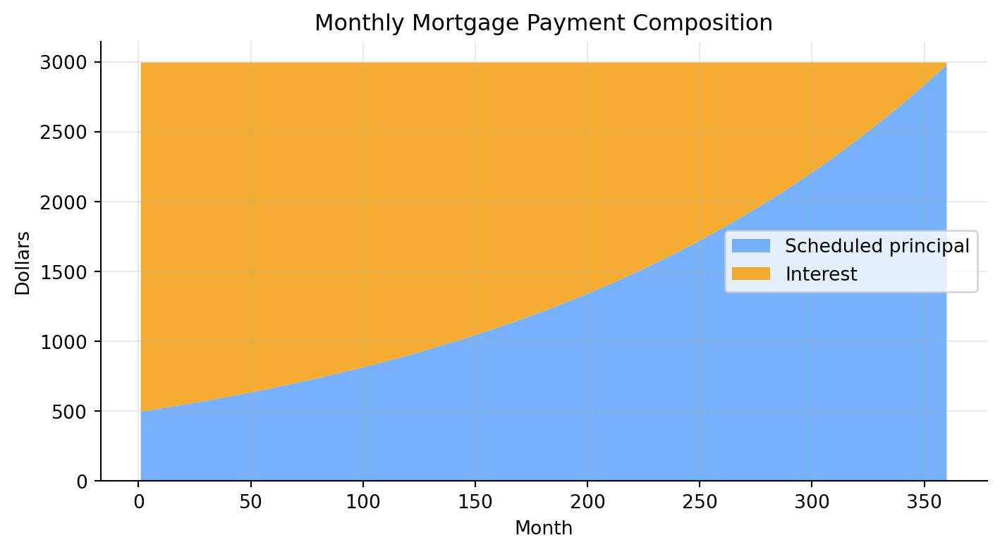
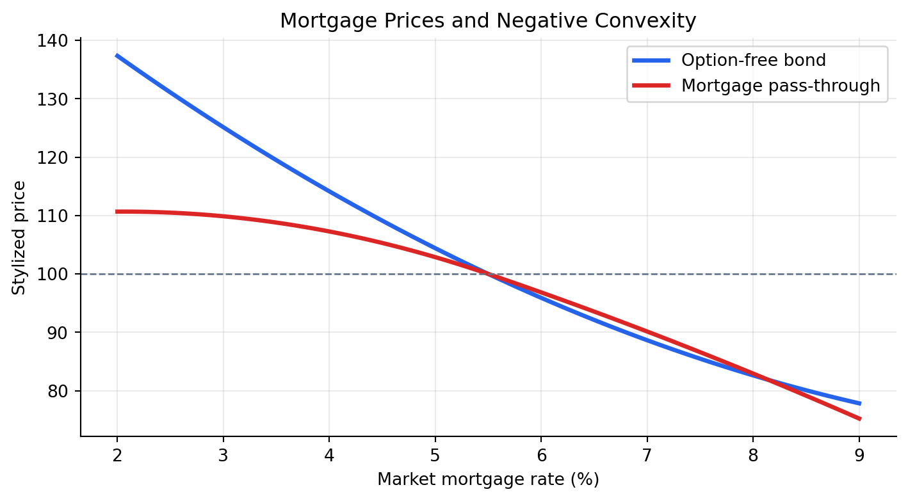
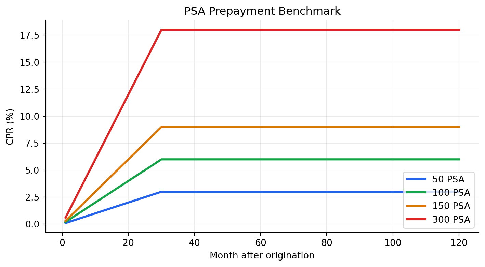
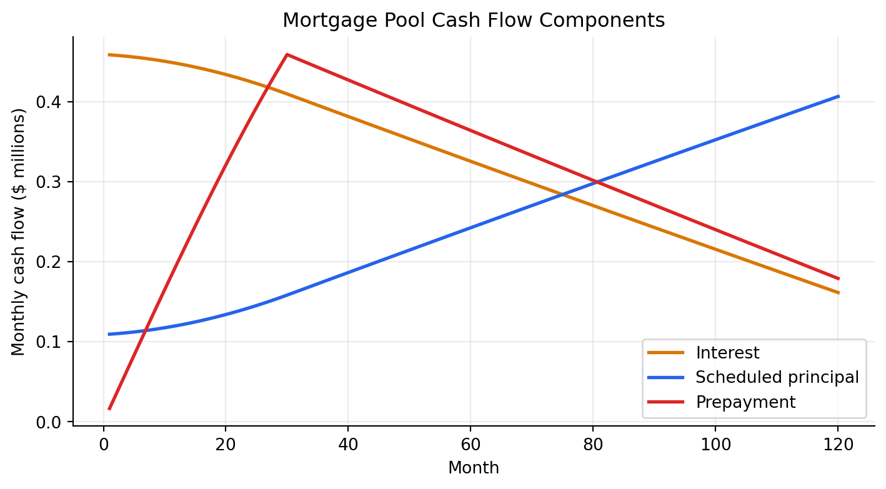
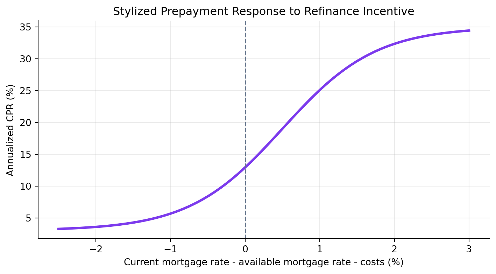
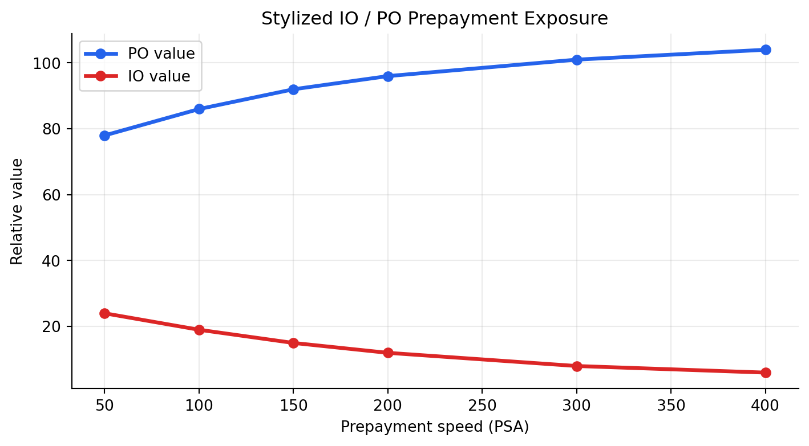

%%{init: {"theme": "base", "themeVariables": {"fontFamily": "Inter, Arial, sans-serif", "lineColor": "#64748b"}}}%%
flowchart LR
A["Household borrower<br/>monthly mortgage payments"] --> B["Originator / servicer<br/>underwrites and collects"]
B --> C["Mortgage pool<br/>many similar loans"]
C --> D["Agency MBS<br/>pass-through security"]
D --> E["Investors<br/>principal + interest + prepayments"]
C --> F["CMO / REMIC<br/>cash-flow tranching"]
F --> G["Different investors<br/>different timing risk"]
classDef borrower fill:#dbeafe,stroke:#2563eb,stroke-width:3px,color:#0f172a;
classDef intermediary fill:#dcfce7,stroke:#16a34a,stroke-width:2.5px,color:#052e16;
classDef pool fill:#fef3c7,stroke:#d97706,stroke-width:2.5px,color:#451a03;
classDef security fill:#ede9fe,stroke:#7c3aed,stroke-width:2.5px,color:#2e1065;
classDef investor fill:#fee2e2,stroke:#dc2626,stroke-width:2.5px,color:#450a0a;
class A borrower;
class B intermediary;
class C pool;
class D,F security;
class E,G investor;
linkStyle 0 stroke:#2563eb,stroke-width:2.8px;
linkStyle 1 stroke:#16a34a,stroke-width:2.8px;
linkStyle 2 stroke:#7c3aed,stroke-width:2.8px;
linkStyle 3 stroke:#dc2626,stroke-width:2.8px;
linkStyle 4 stroke:#7c3aed,stroke-width:2.8px;
linkStyle 5 stroke:#dc2626,stroke-width:2.8px;
Lecture 6: Residential Mortgages and Mortgage‑Backed Securities
Learning Objectives
By the end of this lecture you should be able to:
- Explain how residential mortgage loans are originated and understand underwriting standards such as payment‑to‑income (PTI) and loan‑to‑value (LTV) ratios.
- Distinguish among different types of residential mortgage loans according to lien status, credit classification, interest rate type, amortization structure, credit guarantees, loan size and the presence of prepayment penalties.
- Describe the characteristics of conforming loans and understand why they matter for securitization.
- Identify the risks associated with investing in mortgage loans, including credit risk, liquidity risk, price risk and prepayment/cash‑flow uncertainty.
- Recognise the major sectors of the residential mortgage‑backed security (RMBS) market and describe agency pass‑through securities.
- Explain prepayment conventions such as Conditional Prepayment Rate (CPR), Single Monthly Mortality (SMM) and Public Securities Association (PSA) benchmarks, and construct monthly cash flows from these measures.
- Discuss factors affecting prepayments and the modelling of prepayment behaviour.
- Compute cash‑flow yield and bond‑equivalent yield for mortgage pools and understand their limitations.
- Describe the role of average life, yield spreads to Treasuries and prepayment risk in asset/liability management for mortgage investors.
- Understand how mortgage‑backed securities trade in the secondary market.
1 Residential Mortgage Loans
Residential mortgage finance connects household borrowing, real estate, bank underwriting, government housing policy, and fixed-income markets. A mortgage is a loan secured by residential property. A mortgage-backed security (MBS) is a claim on the cash flows from a pool of mortgage loans.
The central intuition for this lecture is:
A residential mortgage gives the borrower a long-term loan and an embedded prepayment option. An MBS investor owns the loan cash flows but is short that borrower option.
This is why mortgages are more complicated than ordinary coupon bonds. A Treasury bond has promised coupon and principal dates. A mortgage has scheduled principal, scheduled interest, and unscheduled principal because borrowers can move, refinance, default, or voluntarily pay down balances.
Top fixed-income and real estate capital markets courses usually frame mortgages this way: start with the loan contract, then study how pooling changes credit and liquidity, then analyze how prepayments make valuation path-dependent. NYU Stern mortgage-backed securities materials emphasize CPR, SMM, PSA, sequential tranches, PACs, IOs, POs, and negative convexity. MIT real estate capital markets materials emphasize that securitization turns real estate debt cash flows into tradable capital-market instruments.
NoteMarket Snapshot: Why Mortgages Matter
The residential mortgage market is one of the largest U.S. credit markets. Agency MBS are especially important because Fannie Mae, Freddie Mac, and Ginnie Mae securities create a liquid secondary market for mortgage credit. FHFA announced that the 2026 baseline conforming loan limit for one-unit properties is $832,750, with a high-cost area ceiling of $1,249,125. These limits help define which loans can flow into the agency securitization channel.
1.1 Origination of Residential Mortgage Loans
Origination is the process of creating the loan. It includes borrower application, credit checks, income verification, property appraisal, underwriting, closing, funding, and usually sale or delivery into a secondary-market channel.
The reason origination standards exist is that mortgage credit risk depends on both the borrower and the collateral. A borrower with strong income but little equity may default if home prices fall. A borrower with substantial equity but unstable income may default if cash flow is interrupted. Good underwriting evaluates both capacity to pay and incentive to keep paying.
%%{init: {"theme": "base", "themeVariables": {"fontFamily": "Inter, Arial, sans-serif", "lineColor": "#64748b"}}}%%
flowchart LR
A["Application<br/>income, assets, credit"] --> B["Underwriting<br/>PTI, LTV, documentation"]
B --> C["Appraisal<br/>collateral value"]
C --> D["Closing<br/>loan funded"]
D --> E["Servicing<br/>payments collected"]
E --> F["Sale or securitization<br/>agency or private-label"]
classDef start fill:#dbeafe,stroke:#2563eb,stroke-width:2.5px,color:#0f172a;
classDef check fill:#fef3c7,stroke:#d97706,stroke-width:2.5px,color:#451a03;
classDef close fill:#dcfce7,stroke:#16a34a,stroke-width:2.5px,color:#052e16;
classDef market fill:#ede9fe,stroke:#7c3aed,stroke-width:2.5px,color:#2e1065;
class A start;
class B,C check;
class D,E close;
class F market;
linkStyle default stroke:#64748b,stroke-width:2.5px;
Underwriting Standards
Underwriting standards translate borrower and property information into measurable risk controls. The main quantitative ratios are payment-to-income and loan-to-value. Other important inputs include credit score, employment history, liquid reserves, documentation quality, property type, occupancy status, and debt-to-income ratios.
These standards serve three purposes:
- Borrower protection: reduce the chance that the borrower takes on an unaffordable payment.
- Investor protection: reduce default probability and expected loss.
- Securitization standardization: make loans comparable enough to pool and sell.
TipUnderwriting Intuition
PTI asks whether the borrower can make the payment. LTV asks whether the borrower has enough equity to keep paying and whether the lender has collateral protection if default occurs.
Payment-to-Income Ratio
The payment-to-income ratio measures the scheduled mortgage payment relative to borrower income:
\[ \text{PTI} = \frac{\text{Monthly mortgage payment}}{\text{Monthly gross income}}. \]
The mortgage payment often includes principal and interest. A broader housing-expense view can also include property taxes, homeowners insurance, mortgage insurance, and homeowners association fees.
NoteWorked Example: PTI
Suppose a borrower earns $9,000 per month before tax. The proposed monthly principal and interest payment is $2,250.
\[ \text{PTI} = \frac{2{,}250}{9{,}000}=25\%. \]
If taxes, insurance, and other housing costs add $750, the broader housing expense ratio is:
\[ \frac{2{,}250+750}{9{,}000}=33.3\%. \]
The reason lenders use PTI is simple: default often starts as a cash-flow problem. Even if the property is valuable, a borrower who cannot meet the monthly payment may become delinquent.
Loan-to-Value Ratio
The loan-to-value ratio measures the loan balance relative to the property value:
\[ \text{LTV} = \frac{\text{Mortgage balance}}{\text{Appraised property value or purchase price}}. \]
NoteWorked Example: LTV
A borrower buys a home for $700,000 and makes a $140,000 down payment. The mortgage balance is $560,000.
\[ \text{LTV} = \frac{560{,}000}{700{,}000}=80\%. \]
If the home value falls by 15% to $595,000, the same $560,000 loan now has an LTV of about 94.1%.
The reason LTV matters is incentive and recovery. A borrower with more equity has more to lose by defaulting. A lender with lower LTV has a larger collateral cushion if foreclosure occurs.
1.2 Types of Residential Mortgage Loans
Residential mortgages differ along several dimensions. These differences determine who bears interest-rate risk, credit risk, liquidity risk, and prepayment risk.
| Dimension | Examples | Main risk affected | |
|---|---|---|---|
| 0 | Lien status | First lien, second lien, HELOC | Recovery priority |
| 1 | Credit classification | Prime, nonprime, subprime | Default probability |
| 2 | Interest-rate type | Fixed-rate, ARM, hybrid ARM | Rate sensitivity and payment shock |
| 3 | Amortization type | Fully amortizing, interest-only, balloon | Principal timing and affordability |
| 4 | Guarantee | Agency, FHA/VA/USDA, private-label | Credit loss allocation |
| 5 | Loan balance | Conforming, high-balance, jumbo | Liquidity and securitization channel |
| 6 | Prepayment terms | Open prepay, penalty period, lockout | Prepayment option value |
Lien Status
A lien is the lender’s legal claim on the property. A first-lien mortgage has first priority against the property after taxes and certain senior claims. A second-lien mortgage or home equity loan is junior to the first lien. A home equity line of credit (HELOC) is usually a revolving second-lien facility.
The reason lien status matters is recovery priority. If a property is sold after default, the first-lien lender is paid before junior lienholders. Second-lien credit can be attractive because it often carries a higher rate, but it is much more exposed to home-price declines.
NoteExample: Lien Priority
A home sells in foreclosure for $500,000. The first mortgage balance is $450,000 and the second lien is $100,000. Ignoring costs, the first lien is repaid in full, while only $50,000 remains for the second lien. The second-lien recovery is 50%.
Credit Classification
Mortgage loans are often described as prime, near-prime, nonprime, or subprime. These labels summarize borrower credit quality, documentation strength, loan structure, and collateral protection.
Credit classification is not only about credit score. A high-score borrower with limited documentation, high LTV, investor occupancy, and payment shock can still be risky. A lower-score borrower with low LTV, stable income, and reserves may be less risky than the label suggests.
The reason credit categories exist is portfolio segmentation. Investors need to know whether they are buying mostly agency-eligible prime credit, government-insured credit, or private-label credit where losses are absorbed by the deal structure.
Interest-Rate Type
The most common mortgage rate types are:
- Fixed-rate mortgage (FRM): the note rate and scheduled payment are fixed.
- Adjustable-rate mortgage (ARM): the rate resets based on an index plus a margin.
- Hybrid ARM: the rate is fixed for an initial period, such as 5 or 7 years, then resets.
Fixed-rate mortgages shift interest-rate risk to investors. Borrowers keep the same payment when rates rise and can refinance when rates fall. ARMs shift more rate risk to borrowers because payments can rise after reset, although caps limit the adjustment.
TipWhy the 30-Year Fixed-Rate Mortgage Is Special
A long fixed-rate mortgage gives the household payment stability and a valuable refinancing option. The investor receives a higher yield than Treasuries partly because the investor is short that option.
Amortization Type
A fully amortizing mortgage has a level scheduled payment that gradually pays interest and principal so the loan balance reaches zero by maturity. Early payments are mostly interest; later payments are mostly principal.
Interest-only mortgages require interest payments for a period before principal amortization begins. Balloon mortgages have a large principal payment at maturity. These structures can lower early payments but increase refinancing or payment-shock risk.

The reason amortization matters for MBS investors is that scheduled principal already shortens the balance over time. Prepayments add an extra, uncertain principal component on top of scheduled amortization.
Credit Guarantees
Mortgage credit guarantees decide who absorbs losses when borrowers default. In the agency market:
- Ginnie Mae guarantees timely payment on securities backed by federally insured or guaranteed loans, such as FHA, VA, USDA, or Public and Indian Housing loans.
- Fannie Mae and Freddie Mac guarantee timely payment on their agency MBS, but they are GSEs, not Treasury securities.
- Private-label RMBS rely on deal credit enhancement, such as subordination, excess spread, reserve accounts, insurance, or overcollateralization.
The reason guarantees exist is to separate credit risk from interest-rate and prepayment risk. Agency MBS investors mainly analyze prepayment and option risk because the agency guarantee reduces direct mortgage credit loss exposure.
Loan Balances
Loan balance affects eligibility, liquidity, and investor base. Conforming loans meet Fannie Mae and Freddie Mac loan-size limits and underwriting standards. Jumbo loans exceed conforming limits or otherwise do not qualify for agency purchase.
Larger loan balances can prepay differently. A borrower with a large balance has more dollar savings from refinancing after a rate decline, so high-balance pools may be more refinance-sensitive than smaller-balance pools.
The reason investors segment pools by loan balance is adverse selection. If one pool has mostly large loans with strong refinance incentives, it may prepay faster when rates fall, lowering returns for investors who paid a premium.
Prepayments and Prepayment Penalties
Prepayment is unscheduled principal repayment before maturity. It can occur because the borrower refinances, sells the home, pays extra principal, defaults and the loan is liquidated, or the loan is repurchased from a pool.
Prepayment penalties require borrowers to pay a fee if they repay during a specified period. They are less common in prime agency residential mortgages than in some other lending markets.
The reason prepayment penalties exist is option pricing. If the borrower has a free option to refinance, the lender or investor bears reinvestment risk. A penalty partially compensates the investor for the option. The tradeoff is borrower flexibility and consumer protection.
1.3 Conforming Loans
Conforming loans meet Fannie Mae and Freddie Mac eligibility standards, including loan-size limits, documentation requirements, underwriting criteria, and property rules. The FHFA sets conforming loan limits annually under the Housing and Economic Recovery Act framework.
The reason conforming status matters is securitization. Loans that fit agency rules can enter the agency MBS market, where liquidity is much deeper than for one-off whole loans. Standardization lowers funding costs because investors can analyze pools using common rules and data fields.
Note2026 Conforming Loan Limit
FHFA announced that the 2026 baseline conforming loan limit for one-unit properties is $832,750. The general high-cost area ceiling is $1,249,125, or 150% of the baseline limit. Alaska, Hawaii, Guam, and the U.S. Virgin Islands have special statutory limits.
| Category | Limit | Why it matters | |
|---|---|---|---|
| 0 | 2026 baseline one-unit CLL | 832750 | Main national cutoff for agency-eligible one-unit loans |
| 1 | 2026 general high-cost ceiling | 1249125 | Maximum for many high-cost areas under the 150% ceiling |
1.4 Risks Associated with Investing in Mortgage Loans
Mortgage investors face risks that ordinary corporate or Treasury investors do not face in the same way. The core problem is that the borrower controls part of the cash-flow timing.
%%{init: {"theme": "base", "themeVariables": {"fontFamily": "Inter, Arial, sans-serif", "lineColor": "#64748b"}}}%%
flowchart TB
A["Mortgage investor"] --> B["Credit risk<br/>borrower may default"]
A --> C["Liquidity risk<br/>loan may be hard to sell"]
A --> D["Price risk<br/>rates and spreads move"]
A --> E["Prepayment risk<br/>cash-flow timing changes"]
E --> F["Contraction risk<br/>principal returns too fast"]
E --> G["Extension risk<br/>principal returns too slowly"]
classDef investor fill:#dbeafe,stroke:#2563eb,stroke-width:3px,color:#0f172a;
classDef risk fill:#fee2e2,stroke:#dc2626,stroke-width:2.5px,color:#450a0a;
classDef timing fill:#fef3c7,stroke:#d97706,stroke-width:2.5px,color:#451a03;
class A investor;
class B,C,D risk;
class E,F,G timing;
linkStyle default stroke:#64748b,stroke-width:2.5px;
Credit Risk
Credit risk is the risk that borrowers fail to make payments and collateral recoveries are insufficient. For whole loans and private-label RMBS, credit risk is central. For agency pass-through securities, direct credit risk is largely replaced by agency guarantee risk and prepayment risk.
Credit risk rises when underwriting is weak, LTV is high, borrower income is unstable, home prices fall, unemployment rises, or legal foreclosure timelines are long.
NoteExpected Loss Intuition
If a mortgage pool has a 3% default probability and a 35% loss severity after property recovery and expenses, the expected credit loss is:
\[ 0.03 \times 0.35 = 1.05\%. \]
Liquidity Risk
Liquidity risk is the risk that the investor cannot sell the loan or security quickly at a fair price. Whole mortgage loans are relatively illiquid because each loan has unique borrower, property, documentation, and servicing features.
Agency MBS are more liquid because they are standardized and trade in large markets, including the to-be-announced (TBA) market. Private-label RMBS and bespoke mortgage pools are less liquid because investors must analyze collateral details and deal structures.
The reason securitization improves liquidity is pooling and standardization. A pool of thousands of conforming loans is easier to trade than thousands of individual mortgages.
Price Risk
Price risk is the risk that mortgage asset values change when interest rates, spreads, volatility, or prepayment expectations change. Fixed-rate mortgage prices rise when rates fall, but not as much as noncallable bond prices because borrowers refinance.
Mortgage securities often show negative convexity: when rates fall, prepayments accelerate and shorten cash flows; when rates rise, prepayments slow and extend cash flows.

Prepayments and Cash Flow Uncertainty
Prepayment uncertainty is the defining risk of residential mortgages. Borrowers prepay for rate-driven and non-rate-driven reasons. Rate-driven prepayments are refinancing behavior. Non-rate-driven prepayments include home sales, divorce, job relocation, inheritance, curtailments, defaults, and loan buyouts.
The reason this is difficult to value is that the investor does not control the option exercise. The borrower prepays when it is good for the borrower, not when it is good for the investor.
TipContraction and Extension
When rates fall, premium MBS investors fear contraction: principal returns early and must be reinvested at lower yields. When rates rise, investors fear extension: principal comes back slowly and the investor is stuck with below-market coupons for longer.
2 Agency Mortgage Pass-Through Securities
An agency pass-through security passes monthly principal and interest from a mortgage pool to investors after servicing and guarantee fees. The investor receives scheduled interest, scheduled principal, and unscheduled prepayments.
The agency pass-through is the basic building block for more complex mortgage securities. CMOs and stripped MBS reallocate the same pool cash flows, but they do not eliminate the underlying prepayment option.
2.1 Sectors of the Residential Mortgage-Backed Security Market
The residential MBS market can be divided into:
- Agency MBS: issued or guaranteed by Ginnie Mae, Fannie Mae, or Freddie Mac.
- Agency CMO / REMIC securities: agency collateral cash flows reallocated into tranches.
- Agency stripped MBS: principal-only, interest-only, or synthetic-coupon forms.
- Private-label RMBS: non-agency securities backed by mortgages outside agency programs.
The reason this sector distinction matters is credit allocation. Agency MBS investors mainly analyze prepayment risk. Private-label RMBS investors must analyze both prepayment risk and credit losses because the guarantee is not the same.
2.2 General Description of an Agency Mortgage Pass-Through Security
In a pass-through, each investor owns a pro rata interest in a pool. If the investor owns 1% of the pool, the investor receives roughly 1% of the pool’s monthly principal and interest, net of fees.
%%{init: {"theme": "base", "themeVariables": {"fontFamily": "Inter, Arial, sans-serif", "lineColor": "#64748b"}}}%%
flowchart LR
A["Borrowers<br/>P&I payments + prepayments"] --> B["Servicer<br/>collects payments"]
B --> C["Agency guarantor<br/>credit wrap"]
C --> D["Pass-through pool"]
D --> E["Investor 1<br/>pro rata cash flow"]
D --> F["Investor 2<br/>pro rata cash flow"]
D --> G["Investor 3<br/>pro rata cash flow"]
classDef borrower fill:#dbeafe,stroke:#2563eb,stroke-width:2.5px,color:#0f172a;
classDef service fill:#dcfce7,stroke:#16a34a,stroke-width:2.5px,color:#052e16;
classDef agency fill:#fef3c7,stroke:#d97706,stroke-width:2.5px,color:#451a03;
classDef pool fill:#ede9fe,stroke:#7c3aed,stroke-width:3px,color:#2e1065;
classDef investor fill:#fee2e2,stroke:#dc2626,stroke-width:2px,color:#450a0a;
class A borrower;
class B service;
class C agency;
class D pool;
class E,F,G investor;
linkStyle default stroke:#64748b,stroke-width:2.5px;
The coupon on the MBS is lower than the weighted average coupon on the underlying loans because servicing fees and guarantee fees are deducted. This difference pays the parties that collect payments and absorb credit-related obligations.
2.3 Issuers of Agency Pass-Through Securities
The three major agency channels are Ginnie Mae, Fannie Mae, and Freddie Mac. They all support mortgage securitization, but their legal status and collateral types differ.
| Issuer | Legal status | Typical collateral | Main investor issue |
|---|---|---|---|
| Ginnie Mae | U.S. government corporation | FHA, VA, USDA, PIH loans | Explicit full faith and credit guarantee |
| Fannie Mae | Government-sponsored enterprise | Conventional conforming loans | GSE guarantee and conservatorship context |
| Freddie Mac | Government-sponsored enterprise | Conventional conforming loans | GSE guarantee and UMBS/TBA liquidity |
Ginnie Mae
Ginnie Mae does not originate loans or buy mortgages for its own portfolio. Approved private issuers pool eligible government-insured or government-guaranteed loans and issue Ginnie Mae MBS. Ginnie Mae guarantees timely payment of principal and interest on the securities.
The reason Ginnie Mae exists is to connect federally insured mortgage programs to capital markets. FHA and VA lending would be less liquid if investors had to buy individual loans. Ginnie Mae standardizes the security and adds the federal guarantee.
Ginnie Mae I and Ginnie Mae II securities differ in pooling and payment mechanics. Ginnie Mae II allows more flexibility in loan characteristics and uses a central paying agent, which supports broader pooling.
Fannie Mae and Freddie Mac
Fannie Mae and Freddie Mac buy eligible conventional mortgages, guarantee MBS, and support the TBA market. Their guarantees are not the same legal obligation as Treasury debt, but their conservatorship and policy role are central to market confidence.
The reason Fannie Mae and Freddie Mac matter is scale and standardization. By defining eligible collateral, guarantee terms, disclosure data, and settlement conventions, they make mortgage pools tradable for investors who do not personally underwrite every loan.
The Uniform Mortgage-Backed Security (UMBS) framework was designed to align Fannie Mae and Freddie Mac TBA deliverability and improve liquidity across the two GSE markets.
2.4 Prepayment Conventions and Cash Flow
Prepayment conventions turn uncertain borrower behavior into a measurable assumption. The three core terms are CPR, SMM, and PSA.
The reason conventions exist is communication. A trader, portfolio manager, and risk model need a compact way to describe an assumed prepayment path. “150 PSA” is not a forecast by itself; it is a standardized speed assumption.
Conditional Prepayment Rate (CPR)
The Conditional Prepayment Rate is an annualized prepayment rate applied to the remaining balance after scheduled principal. A CPR of 6% means the model assumes about 6% of the relevant remaining balance prepays over a year, conditional on not having prepaid already.
CPR is useful because it is annualized and easy to compare across pools. It is not directly the monthly prepayment rate used in cash-flow construction.
Single-Monthly Mortality (SMM) Rate
The Single-Monthly Mortality rate converts CPR into a monthly prepayment rate:
\[ \text{SMM}=1-(1-\text{CPR})^{1/12}. \]
Equivalently:
\[ \text{CPR}=1-(1-\text{SMM})^{12}. \]
NoteWorked Example: CPR to SMM
If CPR is 6%:
\[ \text{SMM}=1-(1-0.06)^{1/12}=0.5143\%. \]
This means about 0.5143% of the post-scheduled-principal balance prepays that month.
Single-Monthly Mortality Rate and Monthly Prepayment
Monthly prepayment is calculated after scheduled principal is removed:
\[ \text{Prepayment}_t = (\text{Beginning Balance}_t-\text{Scheduled Principal}_t) \times \text{SMM}_t. \]
The order matters. Scheduled principal is contractual amortization. Prepayment is unscheduled principal on the balance that remains after scheduled amortization.
NoteWorked Example: Monthly Prepayment
A pool begins the month with $100,000,000. Scheduled principal is $120,000. CPR is 6%, so SMM is 0.5143%.
\[ \text{Prepayment} =(100{,}000{,}000-120{,}000)\times0.005143 \approx 513{,}700. \]
Public Securities Association (PSA) Prepayment Benchmark
The PSA benchmark is a standard prepayment path for 30-year mortgages. At 100 PSA, CPR starts at 0.2% in month 1, rises by 0.2 percentage points per month until month 30, and then remains at 6% CPR. A multiple of PSA scales this path.
For 100 PSA:
\[ \text{CPR}_t = \begin{cases} 0.06 \times \frac{t}{30}, & t \le 30 \\ 0.06, & t > 30. \end{cases} \]
For 150 PSA, multiply the CPR path by 1.5. For 50 PSA, multiply by 0.5.

Monthly Cash Flow Construction
A mortgage pool cash-flow model usually follows this monthly order:
- Start with beginning balance.
- Calculate scheduled interest.
- Calculate scheduled principal from the mortgage payment.
- Calculate prepayment using SMM on the post-scheduled-principal balance.
- End with the new balance.

The economic lesson is that the investor receives two forms of principal: scheduled amortization and borrower-controlled prepayment. Prepayment can dominate scheduled principal when rates fall or when borrowers have strong turnover incentives.
Beware of Conventions
Mortgage conventions are easy to misread. CPR is annualized; SMM is monthly. PSA is a path, not a single CPR. Pool factors report remaining balance as a percentage of original balance. Average life depends on assumed speeds. Yield depends on price, coupon, fees, and the prepayment path.
WarningCommon Mistake
Do not apply CPR directly as a monthly prepayment rate. A 6% CPR corresponds to about 0.514% SMM, not 6% per month.
The reason conventions are dangerous is that small timing errors compound. A model that prepays principal too early or too late can materially misstate yield, duration, and tranche average life.
2.5 Factors Affecting Prepayments and Prepayment Modeling
Prepayment models usually combine rate incentives, borrower characteristics, housing turnover, seasonality, burnout, credit availability, and policy or servicer behavior.
The most important rate-driven concept is refinance incentive:
\[ \text{Refinance incentive} \approx \text{Borrower's current mortgage rate} - \text{Available new mortgage rate} - \text{Refinancing costs}. \]
If the incentive is positive and large enough, borrowers are more likely to refinance. But prepayments are not purely optimal because borrowers face frictions: credit scores, documentation, moving costs, search costs, tax considerations, inertia, and capacity constraints in the mortgage industry.

Housing Turnover Component
Housing turnover prepayments occur when borrowers sell their homes. Turnover depends on household mobility, job changes, family formation, divorce, retirement, local housing liquidity, and seasonality.
The reason turnover matters is that it creates prepayments even when refinancing is unattractive. A borrower who moves must usually repay the old mortgage, so the MBS investor receives principal whether rates are high or low.
Turnover is often seasonal, with higher activity in spring and summer housing markets. Seasonality makes monthly prepayment analysis more useful than annual averages.
Cash-Out Refinancing Component
Cash-out refinancing occurs when the borrower refinances into a larger loan and takes out home equity in cash. It depends on home-price appreciation, borrower equity, credit availability, and household demand for funds.
The reason cash-out refinancing matters is that it can generate prepayments even if rate savings are modest. A borrower may refinance to consolidate debt, renovate, pay expenses, or extract equity after home prices rise.
Cash-out behavior links mortgage prepayments to the broader credit cycle. When home values rise and underwriting is loose, cash-out refi activity can increase. When home prices fall or lending standards tighten, cash-out prepayments can slow sharply.
2.6 Cash Flow Yield
Cash flow yield is the discount rate that equates an MBS price to projected cash flows under an assumed prepayment path:
\[ P = \sum_{t=1}^{T} \frac{\text{Projected Cash Flow}_t}{(1+y_m)^t}. \]
Here \(y_m\) is a monthly yield. It can be annualized into a bond-equivalent yield. The important phrase is projected cash flows. Unlike Treasury yield-to-maturity, mortgage cash-flow yield depends on the assumed prepayment model.
NoteWorked Example: Cash Flow Yield Intuition
If an investor pays 103 for a premium MBS and the pool prepays quickly, high coupon cash flows disappear faster and the premium is amortized over fewer months. The realized yield may be much lower than the initial cash-flow yield.
Bond-Equivalent Yield
Bond-equivalent yield annualizes a monthly mortgage yield by doubling the semiannual yield equivalent:
\[ \text{BEY} = 2\left((1+y_m)^6-1\right). \]
If the monthly yield is 0.40%, then:
\[ \text{BEY}=2\left((1.004)^6-1\right)=4.86\%. \]
The reason BEY is used is comparison. Treasury and corporate bond yields are often quoted on a semiannual bond-equivalent basis, so converting mortgage yields makes relative-value discussion easier.
Limitations of Cash Flow Yield Measure
Cash-flow yield has three major limitations:
- It assumes a particular prepayment path.
- It ignores the value of the borrower’s prepayment option unless the cash-flow path is scenario-based.
- It can rank bonds incorrectly when securities have different option exposure.
The reason this measure is still used is convenience. It is transparent and easy to compute. But serious mortgage valuation usually uses scenario analysis, option-adjusted spread, duration, convexity, and prepayment model sensitivity.
Yield Spread to Treasuries
Mortgage investors often compare MBS yields or option-adjusted spreads to Treasury yields. The spread compensates for prepayment risk, liquidity, model uncertainty, guarantee fees, and supply-demand technicals.
The spread is not directly comparable to a corporate credit spread. Agency MBS usually have much less direct credit risk, but much more borrower-option risk.
TipSpread Intuition
Treasury spreads compensate investors for taking mortgage cash-flow uncertainty. If rates fall, the MBS investor may not keep the high coupon. If rates rise, the investor may keep the low coupon for longer than expected.
Average Life
Average life is the weighted average time until principal is received:
\[ \text{Average Life} = \frac{\sum_{t=1}^{T} t \times \text{Principal}_t} {12 \times \sum_{t=1}^{T} \text{Principal}_t}. \]
It is measured in years. It is not the same as maturity. A 30-year mortgage pool can have a much shorter average life because scheduled principal and prepayments return principal before final maturity.
| PSA speed | Average life (years) | |
|---|---|---|
| 0 | 0 PSA | 18.98 |
| 1 | 50 PSA | 10.66 |
| 2 | 100 PSA | 7.91 |
| 3 | 150 PSA | 6.44 |
| 4 | 300 PSA | 4.37 |
The reason average life is useful is asset/liability matching. A bank, insurer, or pension investor cares when principal comes back, not only when the final legal maturity occurs.
2.7 Prepayment Risk and Asset/Liability Management
Prepayment risk creates asset/liability management problems because mortgage asset duration changes when rates change.
When rates fall:
- borrowers refinance;
- MBS principal returns faster;
- asset duration shortens;
- investors must reinvest at lower yields.
When rates rise:
- refinancing slows;
- MBS principal returns more slowly;
- asset duration extends;
- funding costs may rise while asset coupons remain low.
%%{init: {"theme": "base", "themeVariables": {"fontFamily": "Inter, Arial, sans-serif", "lineColor": "#64748b"}}}%%
flowchart TB
A["Interest rates fall"] --> B["Refinancing incentive rises"]
B --> C["Prepayments accelerate"]
C --> D["MBS duration contracts"]
D --> E["Reinvestment risk"]
F["Interest rates rise"] --> G["Refinancing incentive disappears"]
G --> H["Prepayments slow"]
H --> I["MBS duration extends"]
I --> J["Extension risk"]
classDef fall fill:#dbeafe,stroke:#2563eb,stroke-width:2.5px,color:#0f172a;
classDef rise fill:#fee2e2,stroke:#dc2626,stroke-width:2.5px,color:#450a0a;
classDef risk fill:#ede9fe,stroke:#7c3aed,stroke-width:2.5px,color:#2e1065;
class A,B,C,D fall;
class F,G,H,I rise;
class E,J risk;
linkStyle 0,1,2,3 stroke:#2563eb,stroke-width:2.5px;
linkStyle 4,5,6,7 stroke:#dc2626,stroke-width:2.5px;
The reason mortgage investors hedge dynamically is that duration is not stable. A Treasury portfolio can be duration-matched more mechanically. A mortgage portfolio can become shorter or longer precisely when the investor does not want that change.
2.8 Secondary Market Trading
Agency MBS trade in specified-pool markets and in the TBA market. In a TBA trade, buyer and seller agree on general parameters such as agency, coupon, maturity, settlement month, and face amount, but the exact pools are announced shortly before settlement.
The TBA market exists because standardization creates liquidity. Instead of negotiating every loan-level detail at trade date, market participants trade fungible agency MBS characteristics and deliver eligible pools later.
Specified pools trade when investors care about particular collateral characteristics, such as low loan balance, geographic concentration, seasoning, high LTV, or other prepayment-relevant features. A pool with slower expected prepayments can trade at a pay-up over generic TBA collateral.
NoteExample: Specified Pool Pay-Up
If generic 5.5% agency MBS trade at 101-16 and a low-loan-balance pool trades at 102-00, the investor pays extra for collateral expected to prepay more slowly when rates fall. The pay-up is valuable only if the prepayment advantage is large enough.
3 Agency Collateralized Mortgage Obligations and Stripped Mortgage-Backed Securities
Agency CMOs and stripped MBS do not create new mortgage cash flows. They reallocate cash-flow timing and risk from the same underlying collateral.
The reason structuring exists is investor segmentation. Some investors want short average life, some want stable principal windows, some want floating coupons, and some want leveraged exposure to prepayment changes. A CMO turns one pool into multiple securities with different risk profiles.
3.1 Agency Collateralized Mortgage Obligations
A collateralized mortgage obligation (CMO), often issued as a REMIC, takes mortgage collateral and creates tranches. Interest and principal are allocated according to deal rules.
%%{init: {"theme": "base", "themeVariables": {"fontFamily": "Inter, Arial, sans-serif", "lineColor": "#64748b"}}}%%
flowchart LR
A["Agency pass-through collateral<br/>monthly P&I + prepayments"] --> B["CMO / REMIC trust"]
B --> C["Sequential tranches<br/>timing priority"]
B --> D["PAC / TAC tranches<br/>planned principal"]
B --> E["Floaters / inverse floaters<br/>coupon reshaping"]
B --> F["IO / PO / NIO<br/>cash-flow stripping"]
B --> G["Support bonds<br/>absorb variability"]
classDef collateral fill:#dbeafe,stroke:#2563eb,stroke-width:3px,color:#0f172a;
classDef trust fill:#ede9fe,stroke:#7c3aed,stroke-width:3px,color:#2e1065;
classDef stable fill:#dcfce7,stroke:#16a34a,stroke-width:2.5px,color:#052e16;
classDef option fill:#fef3c7,stroke:#d97706,stroke-width:2.5px,color:#451a03;
classDef risky fill:#fee2e2,stroke:#dc2626,stroke-width:2.5px,color:#450a0a;
class A collateral;
class B trust;
class C,D stable;
class E,F option;
class G risky;
linkStyle default stroke:#64748b,stroke-width:2.5px;
Sequential-Pay Tranches
Sequential-pay tranches receive principal in order. Tranche A receives all principal until it is paid off; then tranche B receives principal; then tranche C, and so on. While waiting for principal, later tranches usually receive interest on their outstanding balances.
The reason sequential structures exist is to create different average lives from one collateral pool. Short-duration investors buy early tranches. Longer-duration investors buy later tranches.
NoteSequential-Pay Example
Suppose a CMO has A, B, and C tranches. In month 1, the collateral pays $2 million principal. If A is still outstanding, all $2 million goes to A. B and C receive only interest. Once A is fully retired, principal begins flowing to B.
Accrual Bonds
An accrual bond, or Z bond, does not receive current interest for a period. Instead, the interest accrues and is added to the bond’s principal balance. After earlier tranches are paid down, the Z bond begins receiving cash flows.
The reason accrual bonds exist is cash-flow support. By withholding current interest from the Z tranche, the structure can redirect cash to pay down earlier tranches faster or support more stable schedules. The Z investor receives a longer-duration, compounding position.
Floating-Rate Tranches
Floating-rate CMO tranches have coupons tied to an index plus a spread, usually subject to caps and floors. They can be paired with inverse floaters so that the total coupon paid by the collateral is allocated between two tranches.
The reason floaters exist is investor demand for low-duration assets. A money-market or short-duration investor may prefer a mortgage-backed instrument whose coupon resets with rates, while accepting that principal timing still depends on prepayments.
Planned Amortization Class (PAC) Tranches
PAC tranches are designed to receive a planned principal schedule as long as collateral prepayments stay within a specified range. Support bonds absorb extra or shortfall principal to protect the PAC.
The reason PACs exist is to reduce average-life uncertainty. They are not risk-free, but they are more stable than raw pass-throughs or simple sequential tranches over a defined prepayment band.
Creating a Series of PAC Bonds
A CMO can create several PAC bonds with different planned windows. The structurer chooses schedules that allocate expected principal across time while leaving enough support bonds to absorb prepayment variation.
The reason for a series of PACs is investor matching. One investor may want principal in years 2-4, another in years 5-7, and another in years 8-10. A PAC series makes those windows more predictable than a single pass-through.
Planned Amortization Class Window
The PAC window is the period during which the PAC is expected to receive principal according to schedule. It is usually shorter and more stable than the collateral’s final maturity.
The reason the window matters is risk communication. Investors do not only ask “What is the average life?” They ask “When will principal actually arrive?” A narrow window is easier to match against liabilities.
Effective Collars and Actual Prepayments
The PAC collar is the range of prepayment speeds over which the PAC schedule is expected to hold. If actual prepayments stay inside the collar, support bonds absorb the variation. If actual speeds move outside the collar for long enough, the PAC can lose protection.
TipPAC Collar Intuition
The support bond is the shock absorber. Once the shock absorber is used up, the PAC starts feeling the road.
Providing Greater Prepayment Protection for PACs
Greater PAC protection can be created by allocating more collateral cash-flow variability to support bonds, using wider initial bands, or creating PAC groups with priority over other scheduled tranches.
The tradeoff is yield. More protected PACs usually offer lower yields because support bonds are taking more prepayment variability. Support bonds demand higher expected returns for that risk.
Other Planned Amortization Class Tranches
Other planned classes may have different priority levels or schedules. A PAC II, for example, may have planned protection only after the primary PAC has been supported. These structures create a hierarchy of prepayment protection.
The reason these variants exist is fine-tuning. Structurers can create securities that sit between highly protected PACs and volatile support bonds.
Targeted Amortization Class (TAC) Bonds
A targeted amortization class has a principal schedule targeted to a single prepayment speed rather than a broad band. It generally protects against one-sided prepayment risk less effectively than a PAC.
The reason TACs exist is that some investors have a view about prepayment speed and want a cheaper structure than a PAC. The investor receives some schedule targeting but accepts more risk if speeds differ from the target.
Very Accurately Determined Maturity (VADM) Bonds
Very Accurately Determined Maturity bonds are designed to have a highly predictable final maturity under specified assumptions, often by using support from other tranches.
The reason VADMs exist is final-maturity targeting. Some investors care less about monthly principal stability and more about avoiding unexpected final maturity extension.
Interest-Only (IO) and Principal-Only (PO) Tranches
IO and PO tranches split interest and principal cash flows. A PO receives principal payments but no interest. An IO receives interest payments based on a notional or principal amount but no principal.
The prepayment exposure is opposite:
- PO: benefits when prepayments are faster because principal arrives sooner.
- IO: suffers when prepayments are faster because the interest-bearing balance disappears sooner.

The reason IOs and POs exist is risk transfer. A hedge fund or mortgage specialist may want concentrated prepayment exposure. A liability investor may want principal timing. Stripping lets the market separate these exposures.
Notional Interest-Only (NIO) Tranches
A notional IO has no principal balance that will be repaid. Instead, it receives interest calculated on a notional amount that declines according to rules tied to other tranches or collateral balances.
The reason NIOs exist is to allocate excess interest or coupon differences. They can be very sensitive to prepayment speed because the notional balance can decline quickly when principal pays down.
Support Bonds
Support bonds, or companion bonds, absorb prepayment variability so PACs or other planned tranches can maintain their schedules. They receive principal earlier or later depending on actual collateral prepayments.
The reason support bonds offer higher yields is that they carry the instability the PAC investor does not want. They can contract sharply when prepayments are fast and extend sharply when prepayments are slow.
Actual Transaction
Actual CMO transactions are defined by prospectus supplements. The supplement specifies collateral, tranche balances, coupon formulas, principal priority rules, accrual rules, support relationships, trigger events, tax status, and risk factors.
The reason investors read the supplement carefully is that names like PAC, TAC, IO, and support bond are categories, not complete descriptions. Two PACs can behave differently if their support levels, collars, collateral, and priority rules differ.
NoteTransaction Reading Checklist
For any actual CMO, identify the collateral, tranche priority, coupon formula, prepayment assumptions, average-life table, stress scenarios, support bond size, and what happens when prepayments fall outside the stated band.
3.2 Agency Stripped Mortgage-Backed Securities
Agency stripped MBS split mortgage cash flows into securities with different coupon exposure. The simplest form separates principal-only and interest-only cash flows. More complex forms create synthetic coupon pass-throughs or CMO strips.
The reason stripped MBS are useful is that they expose the mortgage option more directly. IO prices are highly sensitive to faster prepayments; PO prices are highly sensitive to discount rates and principal timing.
Synthetic-Coupon Pass-Throughs
A synthetic-coupon pass-through is created by recombining strips to produce an artificial coupon different from the original collateral coupon. For example, an investor can combine IO and PO pieces to create a security with a lower or higher effective coupon.
The reason synthetic coupons exist is relative value. Different investors may prefer different coupon exposures depending on their prepayment view, hedge needs, or accounting constraints.
Interest-Only / Principal-Only Securities
IO and PO securities are the cleanest examples of mortgage cash-flow stripping. The PO receives principal and is usually priced at a discount. The IO receives interest and may decline in value when rates fall because faster prepayments reduce future interest.
TipIO / PO Intuition
PO investors want their principal back sooner if the price is below par. IO investors want the mortgage balance to stay outstanding so interest keeps arriving.
This is the opposite of a normal premium pass-through investor, who may dislike fast prepayments because premium principal is returned at par. It is also why IO/PO markets are useful for extracting market-implied prepayment views.
Collateralized Mortgage Obligation Strips
CMO strips are IO or PO interests tied to specific CMO tranches rather than directly to a whole pass-through pool. Their behavior depends on both collateral prepayments and tranche allocation rules.
The reason CMO strips are especially complex is layering. The investor is exposed to borrower prepayment behavior and to the CMO waterfall. A strip off a support bond can behave very differently from a strip off a PAC because the underlying tranche receives principal under different rules.
4 Key Points
- Residential mortgages combine a loan secured by property with a borrower prepayment option. Mortgage investors receive principal and interest, but they are exposed to uncertain timing.
- Origination quality matters because mortgage risk depends on both borrower capacity and collateral value. PTI and LTV are central underwriting ratios.
- Mortgage loans differ by lien status, credit classification, interest-rate type, amortization type, credit guarantee, loan balance, and prepayment restrictions.
- Conforming loans matter because they can enter the agency securitization channel. Nonconforming loans usually face different liquidity, credit, and pricing conditions.
- Mortgage-loan investors face credit risk, liquidity risk, price risk, and prepayment risk. Prepayment risk is the defining feature of residential mortgage investing.
- Agency pass-through securities pass borrower mortgage payments through to investors after servicing and guarantee fees. They reduce credit risk but do not remove prepayment risk.
- Ginnie Mae securities carry explicit U.S. government backing, while Fannie Mae and Freddie Mac securities are agency MBS backed by their guarantee frameworks and conservatorship support.
- CPR is an annualized prepayment measure; SMM is the monthly prepayment probability implied by CPR. PSA is a benchmark path that ramps prepayments over time.
- Mortgage cash flows require monthly construction because each month includes scheduled interest, scheduled principal, and unscheduled prepayments.
- Cash-flow yield depends on assumed prepayment speed, so it is not a model-free return measure. A different prepayment assumption can produce a different yield.
- Average life measures the weighted average timing of principal payments and is more useful than final maturity for amortizing and prepayable mortgage securities.
- MBS investors are short the borrower prepayment option. When rates fall, borrowers refinance faster; when rates rise, prepayments slow and investors may be stuck with lower-coupon exposure for longer.
- CMOs reallocate mortgage cash-flow timing across tranches. Sequential-pay, accrual, floater, PAC, TAC, VADM, IO, PO, NIO, and support tranches each target different investor needs.
- PAC tranches offer more stable principal schedules only because support bonds absorb more prepayment variability. Protection depends on the PAC collar and available support.
- IO and PO securities isolate opposite prepayment exposures. Faster prepayments help POs but hurt IOs.
- CMO and stripped-MBS analysis requires reading the actual prospectus supplement because tranche labels alone do not fully define cash-flow priority, triggers, or risk.
5 Suggested Readings
Fabozzi – Bond Markets, Analysis, and Strategies:
Chapter 10: residential Mortgage Loans
Chapter 11: agency Mortgage Pass-through securities
Chapter 12: agency collateralized Mortgage Obligations and stripped Mortgage-backed securities
Sources used for market grounding and lecture framing include NYU Stern mortgage-backed securities lecture materials, MIT OpenCourseWare real estate capital markets materials, Ginnie Mae program descriptions, Fannie Mae and Freddie Mac MBS materials, FHFA conforming loan limit releases, and academic prepayment-risk research emphasizing the option-like and model-dependent nature of agency MBS valuation.